The Last of us 1
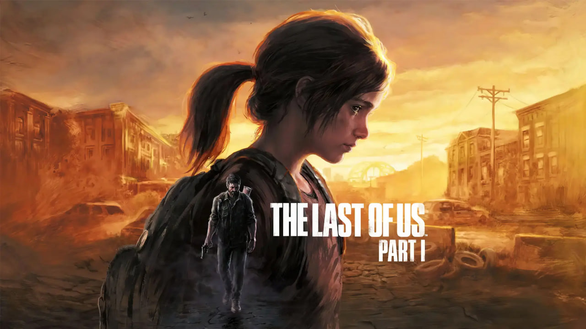he Last of Us is a 2013 action-adventure game developed by Naughty Dog and published by Sony Computer Entertainment. Players control Joel, a smuggler tasked with escorting a teenage girl, Ellie, across a post-apocalyptic United States. The Last of Us is played from a third-person perspective. Players use firearms and improvised weapons and can use stealth to defend against hostile humans and cannibalistic creatures infected by a mutated fungus. In the online multiplayer mode, up to eight players engage in cooperative and competitive gameplay
Download NowScore GameSpot: 8/10
God of war ragnarok
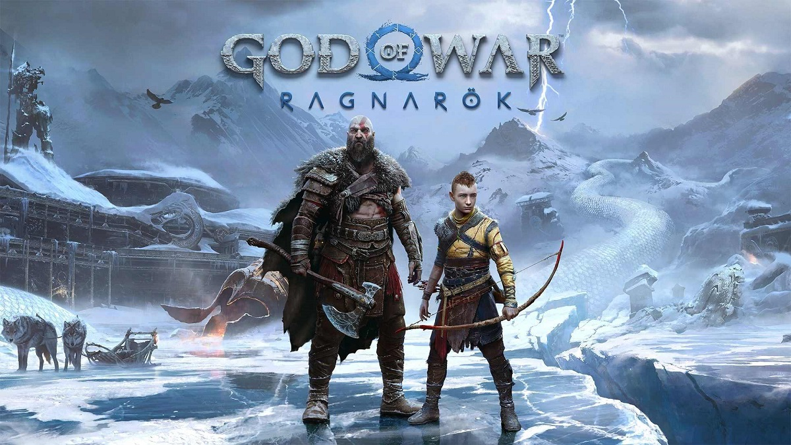God of War Ragnarök is an action-adventure game developed by Santa Monica Studio and published by Sony Interactive Entertainment. It was released worldwide on November 9, 2022, for both the PlayStation 4 and PlayStation 5, marking the first cross-gen release in the God of War series. It is the ninth installment in the series, the ninth chronologically, and the sequel to 2018's God of War. Loosely based on Norse mythology, the game is set in ancient Scandinavia and features series protagonist, Kratos, and his now teenage son, Atreus. Concluding the Norse era of the series, the game covers Ragnarök, the eschatological event which is central to Norse mythology and was foretold to happen in the previous game after Kratos killed the Aesir god Baldur
Download NowScore GameSpot: 9/10
Ghost of tsushima
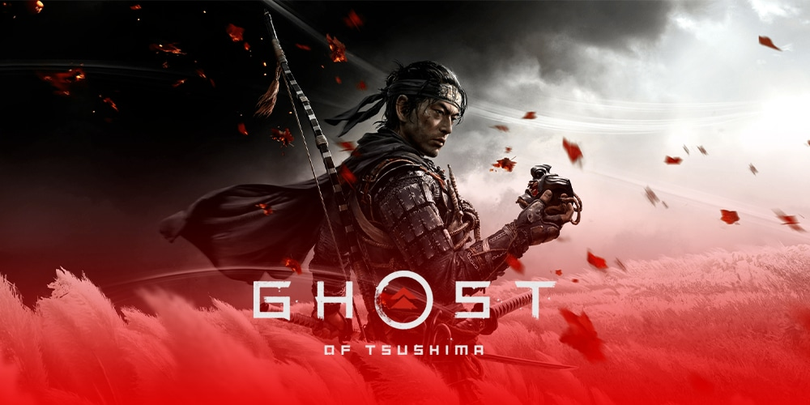Ghost of Tsushima is a 2020 action-adventure game developed by Sucker Punch Productions and published by Sony Interactive Entertainment. The player controls Jin Sakai, a samurai on a quest to protect Tsushima Island during the first Mongol invasion of Japan. Jin must choose between following the warrior code to fight honorably, or using practical but dishonorable methods of repelling the Mongols with minimal casualties. The game features a large open world which can be explored either on foot or on horseback. When facing enemies, the player can choose to engage in a direct confrontation using Jin's katana or to become a legendary warrior known as "the Ghost" by using stealth tactics to assassinate opponents. A multiplayer mode titled Ghost of Tsushima: Legends was released in October 2020 and made available separately in September 2021
Download NowScore GameSpot: 7/10
It Takes Two
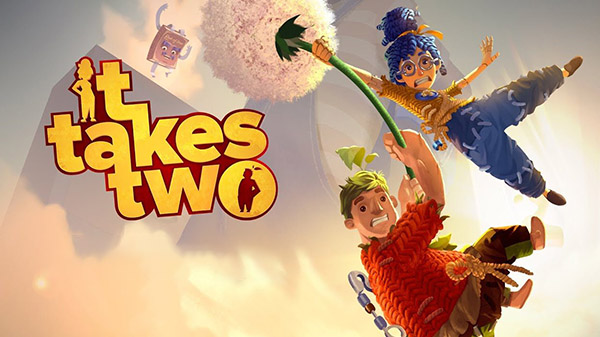It Takes Two is an action-adventure video game with elements from platform games. It is specifically designed for split-screen cooperative multiplayer, which means that it must be played with another player through either local or online play. The game features a large number of game mechanics from various video game genres. These gameplay mechanics are connected to the story and the theme of the level. For instance, in one level, Cody gains the ability to rewind time, whereas May can replicate herself. Players have to cooperate with each other and utilize these abilities in order to progress. The game also features a large number of minigames
Download NowScore GameSpot: 9/10
Assassin's Creed Valhalla
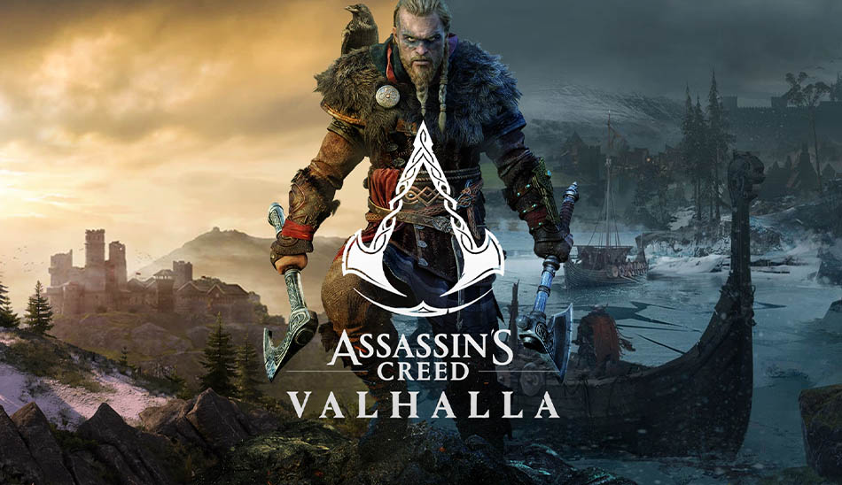Assassin's Creed Valhalla is a 2020 action role-playing video game developed by Ubisoft Montreal and published by Ubisoft. It is the twelfth major installment in the Assassin's Creed series, and the successor to 2018's Assassin's Creed Odyssey. Principally set in the years 872–878 AD, the game recounts a fictional story during the Viking expansions into the British Isles. Players control Eivor Varinsdottir, a Viking raider who, while attempting to establish a new Viking clan in England, becomes embroiled in the centuries-old conflict between the Hidden Ones, who fight for peace and liberty, and the Order of the Ancients, who desire peace through control. The game also includes a framing story, set in the 21st century, which follows Layla Hassan, an Assassin who relives Eivor's memories so as to find a way to save the Earth from destruction
Download NowScore GameSpot: 8/10
Marvel's spider-man
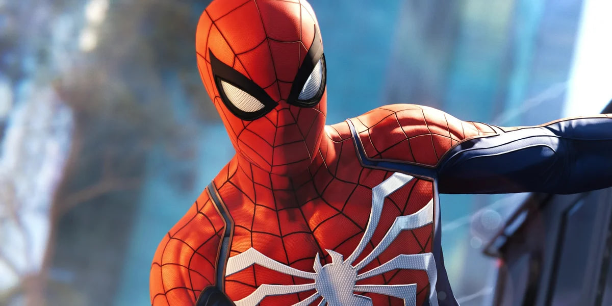Marvel's Spider-Man is a 2018 action-adventure game developed by Insomniac Games and published by Sony Interactive Entertainment. Based on the Marvel Comics character Spider-Man, it tells an original narrative that is inspired by the long-running comic book mythology, while also drawing from various adaptations in other media. In the main story, the super-human crime lord Mister Negative orchestrates a plot to seize control of New York City's criminal underworld. When Mister Negative threatens to release a deadly virus, Spider-Man must confront him and protect the city while dealing with the personal problems of his civilian persona, Peter Parker
Download NowScore GameSpot: 9/10
Spider-man miles morales
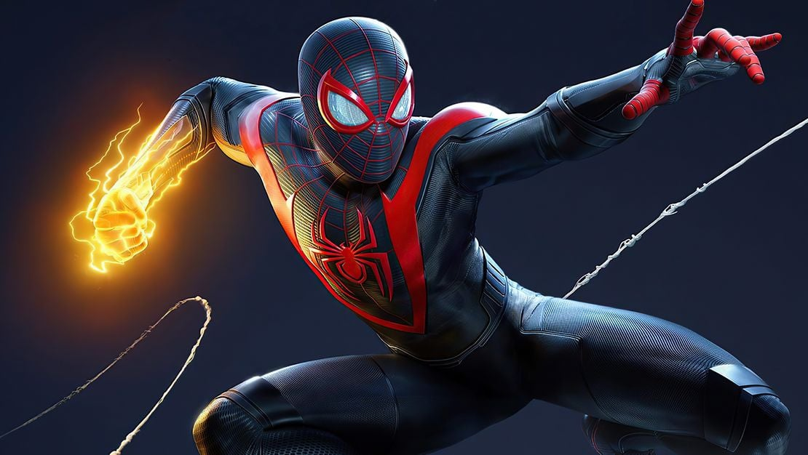Marvel's Spider-Man: Miles Morales is a 2020 action-adventure game developed by Insomniac Games and published by Sony Interactive Entertainment. Based on the Marvel Comics character Miles Morales, it is inspired by both the character's decade-long comic book mythology and appearances in other media. The game is a spin-off and continuation of Marvel's Spider-Man (2018), and the second installment in Insomniac's Spider-Man series. The narrative focuses on Miles' struggle to balance the duties of his civilian persona and his role as the second Spider-Man when his new home, Harlem, is threatened by a war between the Roxxon Energy Corporation and a high-tech criminal army called the Underground, led by the mysterious Tinkerer
Download NowScore GameSpot: 7/10
Uncharted 4
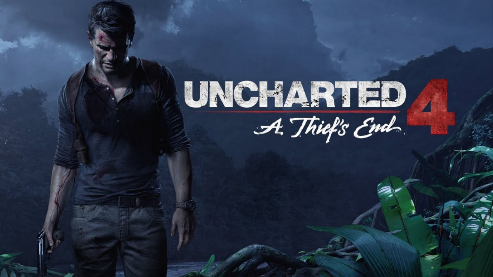Uncharted 4: A Thief's End is a 2016 action-adventure game developed by Naughty Dog and published by Sony Computer Entertainment. It is the fourth main entry in the Uncharted series. Set several years after the events of Uncharted 3: Drake's Deception, players control Nathan Drake, a former treasure hunter coaxed out of retirement by his presumed-dead brother Samuel. With Nathan's longtime partner, Victor Sullivan, they search for clues to the location of Henry Avery's long-lost treasure. A Thief's End is played from a third-person perspective, and incorporates platformer elements. Players solve puzzles and use firearms, melee combat, and stealth to combat enemies. In the online multiplayer mode, up to ten players engage in co-operative and competitive modes
Download NowScore GameSpot: 10/10
Cod modern warfare 2
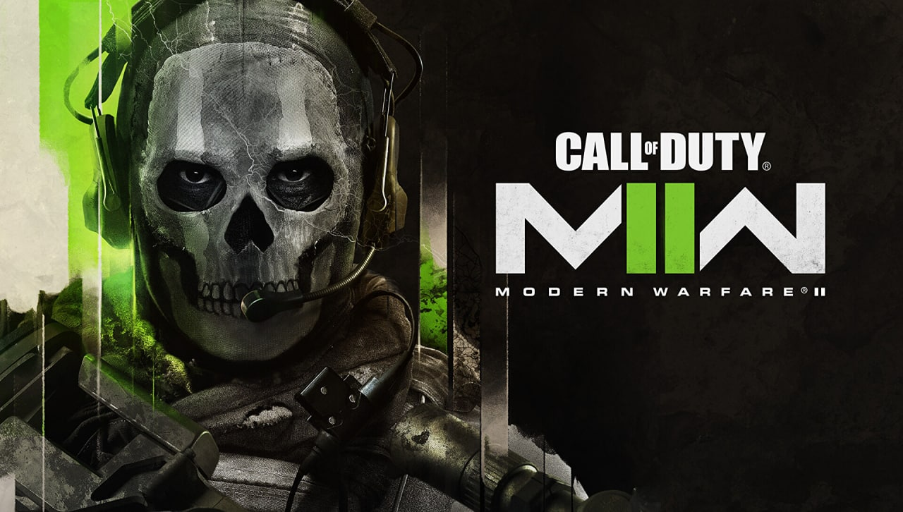Call of Duty: Modern Warfare II is a 2022 first-person shooter video game developed by Infinity Ward and published by Activision. It is a sequel to the 2019 reboot, and serves as the nineteenth installment in the overall Call of Duty series.Like its predecessor, the game takes place in a realistic and modern setting. The campaign follows multi-national special operations unit Task Force 141 and Mexican Special Forces unit Los Vaqueros as they attempt to track down terrorist Hassan Zyani, who is in possession of American-made ballistic missiles. Powered by a new version of the IW engine, Modern Warfare II continues to support cross-platform multiplayer and also features a free-to-play battle royale mode, Warzone 2.0, a follow-up to the original Warzone, all within a single cross-game launcher, known as Call of Duty HQ
Download NowScore GameSpot: 5/10
A way out
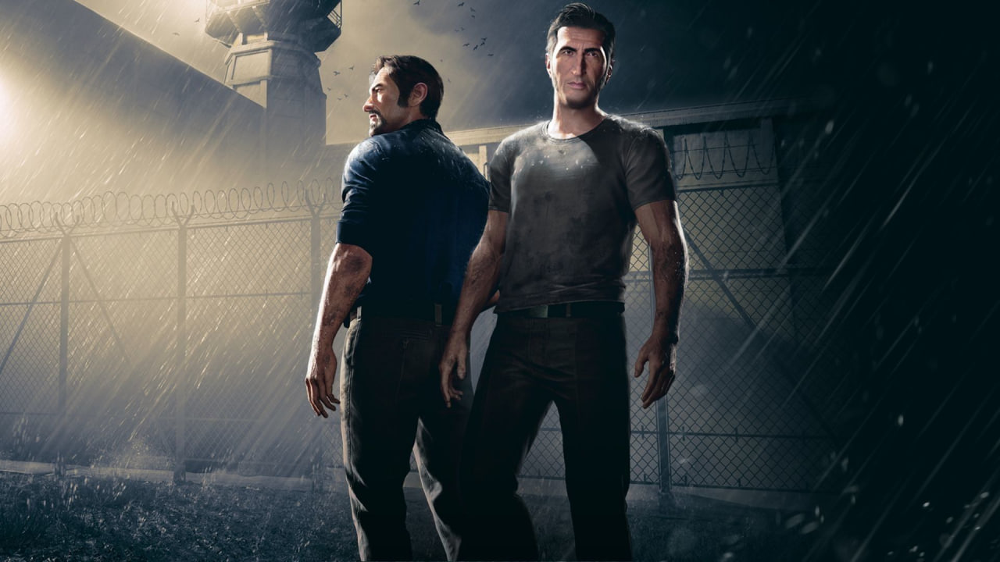A Way Out is a cooperative action-adventure video game developed by Hazelight Studios and published by Electronic Arts. It is the second video game to be directed by Josef Fares after Brothers: A Tale of Two Sons. A Way Out does not have a single-player option; it is playable on local or online split screen co-op between two playerson March 23, 2018, selling over a million copies in two weeks
Download NowScore GameSpot: 6/10
Platform support
| Game | Win | Ps | Xbox | Nintendo |
|---|---|---|---|---|
| The Last of us 1 | ✅ | ✅ | ❌ | ❌ |
| God of war ragnarok | ❌ | ✅ | ❌ | ❌ |
| Ghost of tsushima | ❌ | ✅ | ❌ | ❌ |
| It takes two | ✅ | ✅ | ✅ | ✅ |
| Assassin s creed valhalla | ✅ | ✅ | ✅ | ❌ |
| Marvel s spider-man | ✅ | ✅ | ❌ | ❌ |
| Spider-man miles morales | ✅ | ✅ | ❌ | ❌ |
| Uncharted | ✅ | ✅ | ❌ | ❌ |
| Cod modern warfare 2 | ✅ | ✅ | ✅ | ❌ |
| A way out | ✅ | ✅ | ✅ | ❌ |
🚗Car games🎮
Forza horizon 5
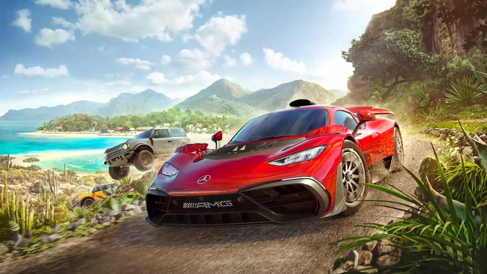Forza Horizon 5 is a 2021 racing video game developed by Playground Games and published by Xbox Game Studios. It is the fifth Forza Horizon title and twelfth main instalment in the Forza series. The game is set in a fictionalised representation of Mexico.The game received critical acclaim and became a commercial success upon release; it launched to over ten million players in the first week, the biggest-ever launch for an Xbox Game Studios game. Notably, the game won IGN's Game of the Year award and three jury-voted awards at The Game Awards 2021, tying with Hazelight's It Takes Two for most wins
Download NowScore GameSpot: 9/10
Dirt rally 2
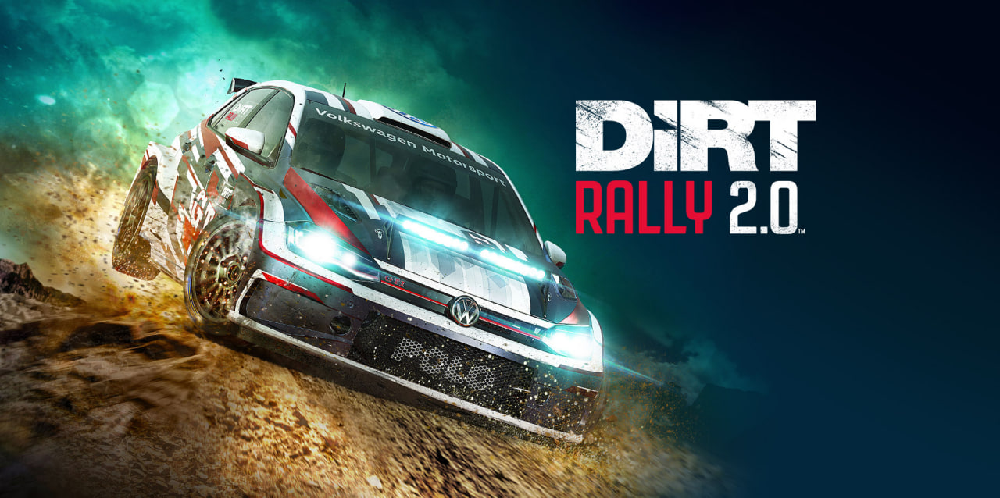Dirt Rally 2.0 (stylised as DiRT Rally 2.0) is a racing simulation video game developed and published by Codemasters.Dirt Rally 2.0 is focused on rallying and rallycross. Players compete in timed stage events on tarmac and off-road terrain in varying weather conditions. The game features stages in Argentina, Australia, New Zealand, Poland, Spain and the United States
Download NowScore GameSpot: 8/10
Need for speed heat

Need for Speed Heat (stylised as NFS Heat) is a 2019 racing video game developed by Ghost Games and published by Electronic Arts for PlayStation 4, Windows, and Xbox One. It is the twenty-fourth installment in the Need for Speed series and commemorates the series' 25th anniversary. The game received mixed reviews from critics, who mostly found the game to be an improvement over the 2015 Need for Speed reboot and Payback but not enough to be a full return to form for the franchise
Download NowScore GameSpot: 7/10
F1 2020
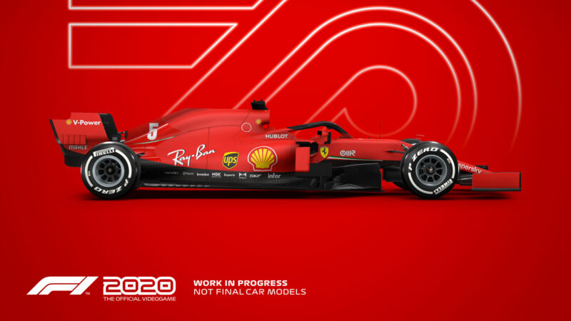F1 2020 is the official video game of the 2020 Formula 1 and Formula 2 Championships developed and published by Codemasters. It is the thirteenth title in the Formula 1 series developed by the studio and was released on 7 July for pre-orders of the Michael Schumacher Edition and 10 July for the Seventy Edition on Microsoft Windows, PlayStation 4, Xbox One and, for the first time, Stadia. The game is the twelfth main series installment in the franchise, and it features the twenty-two circuits, twenty drivers and ten teams proposed in the provisional 2020 Formula 1 World Championship
Download NowScore GameSpot: 9/10
Gran turismo sport
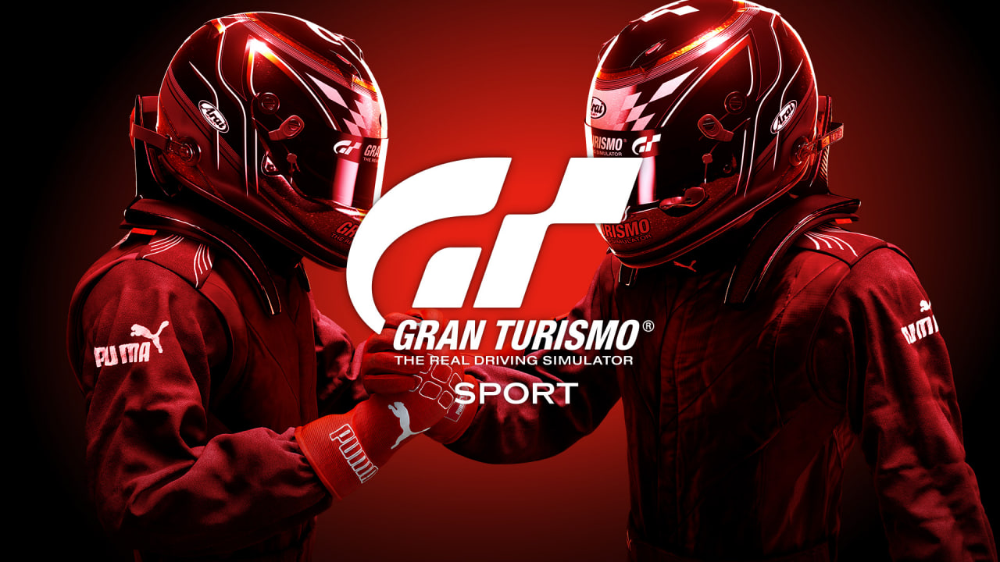Gran Turismo Sport is a 2017 racing video game developed by Polyphony Digital and published by Sony Interactive Entertainment for the PlayStation 4. It is the twelfth game in the Gran Turismo series, the seventh game in the main series.One of Gran Turismo Sport's main focuses is competitive online racing, supported by the international governing body of motorsport, the Fédération Internationale de l'Automobile (FIA), and serving as the platform for the FIA-Certified Gran Turismo Championships
Download NowScore GameSpot: 8/10
Crash team racing nitro-fueled
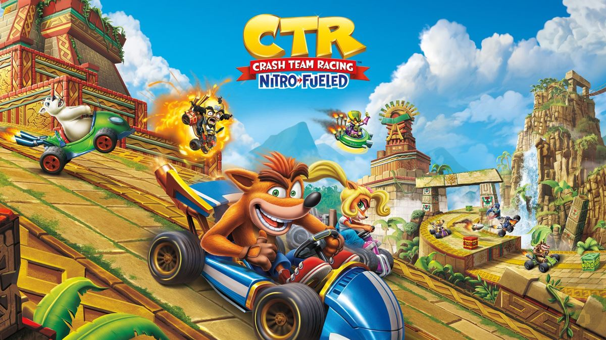Crash Team Racing Nitro-Fueled is a 2019 kart racing game developed by Beenox and published by Activision. The game is a remastered version of Crash Team Racing, which was originally developed by Naughty Dog for the PlayStation in 1999, and focuses on players using one of several characters from the Crash Bandicoot series to tackle races, each of which includes power-ups to help with combatting opponents. The game includes additional content from Crash Nitro Kart and Crash Tag Team Racing, alongside adjustments to the original gameplay, including kart customization, two adventure mode variations, and an in-game shop
Download NowScore GameSpot: 8/10
IRacing
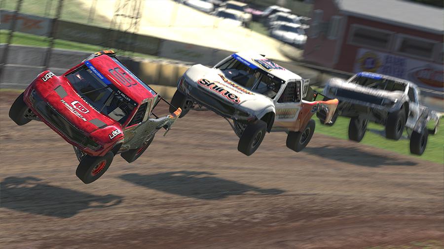iRacing is a subscription-based online racing simulation video game developed and published by iRacing.com Motorsport Simulations in 2008. All in-game sessions are hosted on the publisher's servers. The game simulates real world cars, tracks, and racing events, and enforces rules of conduct modeled on real auto racing events
Download NowScore GameSpot: 6/10
Need for speed rival
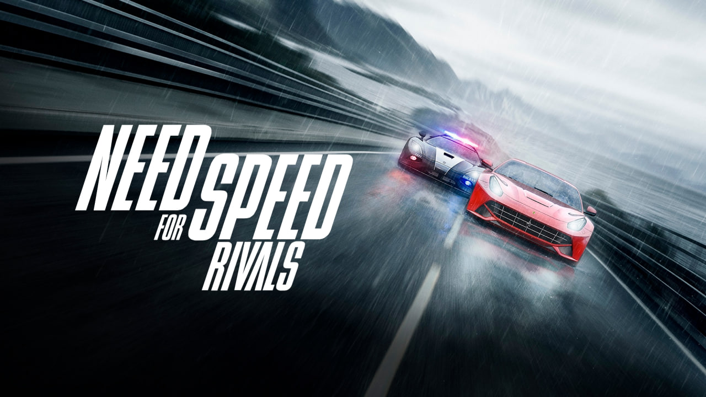Need for Speed Rivals is a 2013 racing video game developed in a collaboration between Ghost Games and Criterion Games, and published by Electronic Arts. It is the twentieth installment in the Need for Speed series and the debut title for Ghost Games, who would be established as the primary developer of the series for all subsequent non-mobile installments up until 2020. Rivals was well received by critics at E3 2013 and was awarded with "Best Racing Game" from Game Critics Awards. It also received mostly positive reviews upon release. It was followed in 2015 by the mobile game Need for Speed: No Limits and the unsubtitled reboot of this franchise
Download NowScore GameSpot: 8/10
Split second
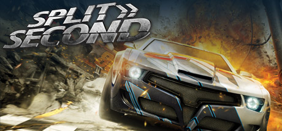Split/Second (released in Europe as Split/Second: Velocity) is a racing video game developed by Black Rock Studio and published by Disney Interactive Studios for Windows, PlayStation 3 and Xbox 360. Announced on 11 March 2009, the game was released on 18 May 2010 and was later released for OnLive in June 2011.In the game, players take part in a fictional reality television show, consisting of a variety of events, each focusing on destructible environments triggered remotely by driver actions known as "power plays
Download NowScore GameSpot: 7.5/10
Gran turismo 7
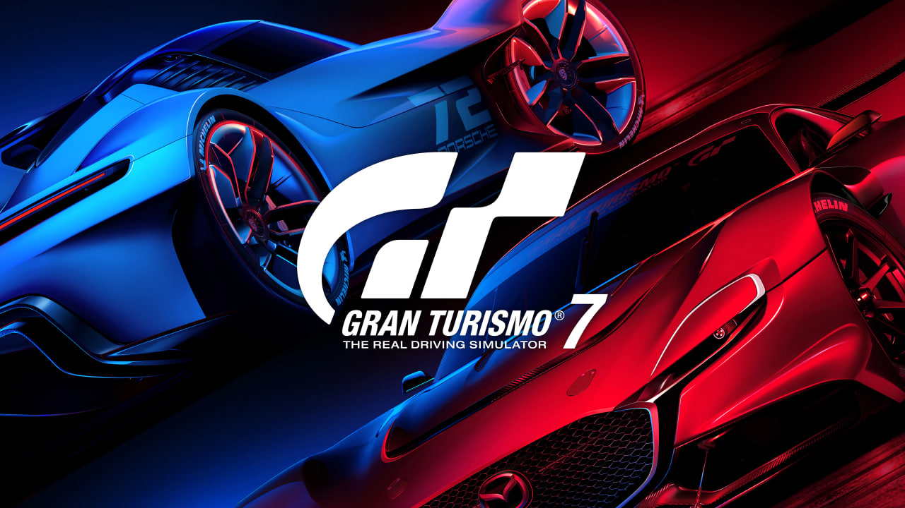Gran Turismo 7 is a 2022 racing simulation game developed by Polyphony Digital and published by Sony Interactive Entertainment. It is the eighth main installment and the thirteenth overall in the Gran Turismo series. The game was announced on June 11, 2020, at the PlayStation 5 reveal event, and was released on March 4, 2022, for PlayStation 4 and PlayStation 5, making it the first multi-console installment in the series. The game also features virtual reality support compatible with PlayStation VR2 through a free in-game updat.Gran Turismo 7 received generally favorable reviews from critics, with praise for its graphics and gameplay. Player reception was critical of its use of microtransactions, excessive grinding, and always-online DRM
Download NowScore GameSpot: 8/10
Platform support
| Game | Win | Ps | Xbox | Nintendo |
|---|---|---|---|---|
| Forza horizon 5 | ✅ | ❌ | ✅ | ❌ |
| Dirt rally 2 | ✅ | ✅ | ✅ | ❌ |
| Need for speed heat | ✅ | ✅ | ✅ | ❌ |
| F1 2020 | ✅ | ✅ | ✅ | ❌ |
| Gran turismo sport | ❌ | ✅ | ❌ | ❌ |
| Crash team racing nitro-fueled | ❌ | ✅ | ✅ | ✅ |
| IRacing | ✅ | ❌ | ❌ | ❌ |
| Need for speed rival | ✅ | ✅ | ✅ | ❌ |
| Split second | ✅ | ✅ | ✅ | ❌ |
| Gran turismo 7 | ❌ | ✅ | ❌ | ❌ |